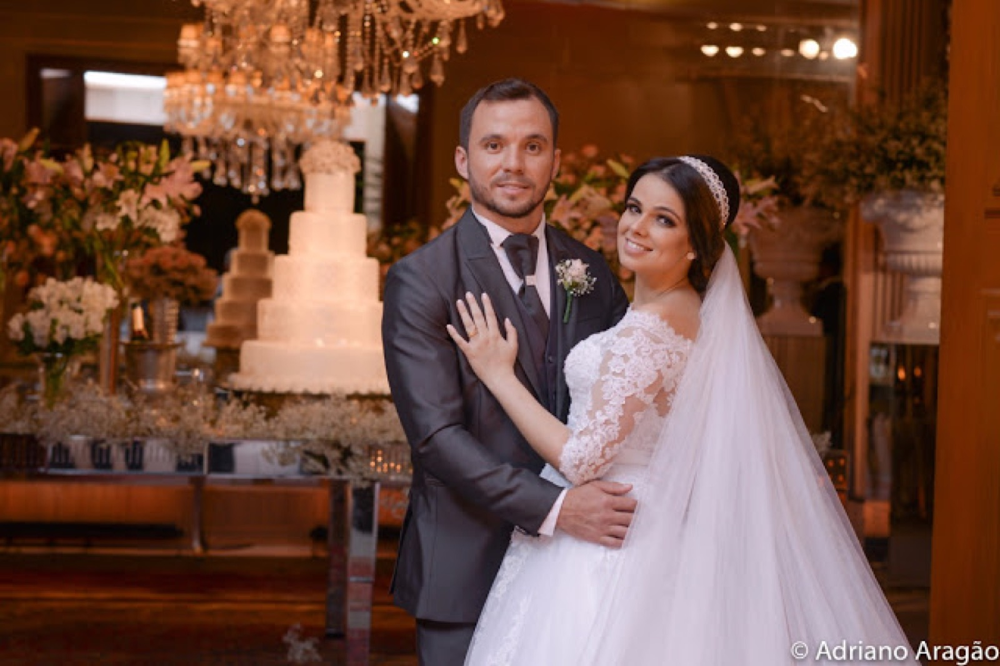
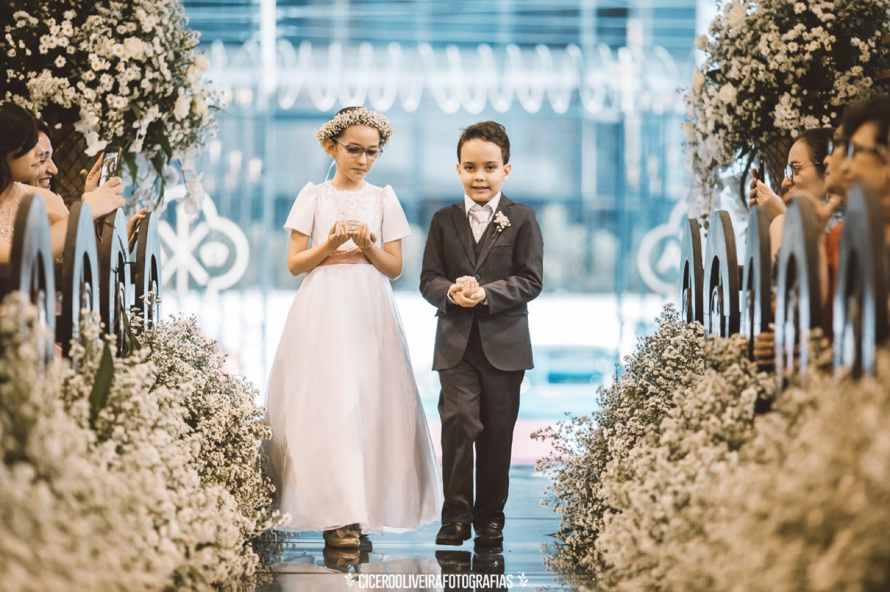

Casamentos
Cerimônia e recepção com roteiro, entrada dos padrinhos, daminhas e noivos e os fornecedores em sintonia.
O Cerimonial Sarah Lucas organiza casamentos, festas infantis e celebrações para que você receba seus convidados com calma e aproveite o dia de verdade.

do simCada tipo de evento tem o seu ritmo. O cerimonial cuida para que tudo aconteça na hora certa, do jeito que você imaginou.

Cerimônia e recepção com roteiro, entrada dos padrinhos, daminhas e noivos e os fornecedores em sintonia.

Mesa, parabéns e brincadeiras no compasso certo, com alguém atento a cada detalhe enquanto a família curte.
Aniversários, bodas e encontros de família com a organização de quem conhece o passo a passo de uma festa.
Muita gente confunde os dois. Entenda a diferença e escolha o que faz sentido para o seu evento.
Acompanhamento durante o planejamento, para você não se perder entre tantas decisões.
A condução do evento, do início ao fim, para que você só se preocupe em aproveitar.
Os detalhes de cada serviço são combinados com a Sarah conforme o seu evento.
Um caminho simples, do primeiro contato ao dia da festa.
Você conta a data, o tipo de evento e o que imagina. Pode começar pelo planejador abaixo.
A Sarah monta a proposta com os serviços que fazem sentido para a sua festa.
Roteiro, fornecedores e horários alinhados com antecedência, sem correria.
O cerimonial conduz o evento enquanto você recebe os convidados e aproveita.
Responda 5 perguntas rápidas e receba um cronograma sugerido. No final, suas respostas vão organizadas direto para o WhatsApp da Sarah.
Chame no WhatsApp e conte o tipo de evento, a data e quantos convidados você espera.